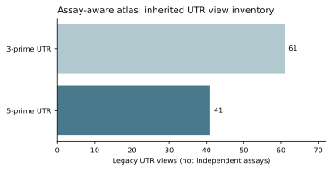

Context-aware mRNA research
V0.6 · 6 November 2026 · Reproducible engineering, evidence-gated science.
From regulatory sequence to independent design evidence
Understand regulation → predict translation and persistence → cross-cell transfer → measured tail/joint outcomes → independently validated selection.

| Layer | Implemented | Scientific boundary |
|---|---|---|
| Provenance | Source hash, raw-row/column mapping, rights validation | 102 inherited views are not 102 independent assays |
| THERNA | Import, QC, axis splits, CPU B0–B4, prediction replay | Real statistics remain local; raw Penta target missing |
| Cell transfer | S-OUT and cell-agnostic C-OUT-ID | Descriptor-based C-/SC-OUT await independent inputs |
| Poly(A) | Three distinct task schemas and true-label gates | No measured training table admitted |
| Models | Reuse historic Frozen/LoRA evidence | New adaptation requires a new GPU scope |
| Paper figures | Six contracts and gap-aware scripts | Only registry metadata can currently be published |
Independent research questions, not manufactured findings
Can sequence–cell interaction exceed an additive model and measurement noise? Are cross-cell rank reversals robust? Do shared libraries and label transforms inflate apparent evidence? These questions require biological/assay review, negative controls and correct independent sampling units before publication.
Reproduce without private data
python -m pip install -e '.[research-v06]'
python -m tools.mrna_design e2e --out runs/v06-demo-001
python -m unittest discover -s tests -vThe demo is explicitly synthetic and cannot enter a scientific leaderboard.
Methods and reproducibility · Machine-readable public status